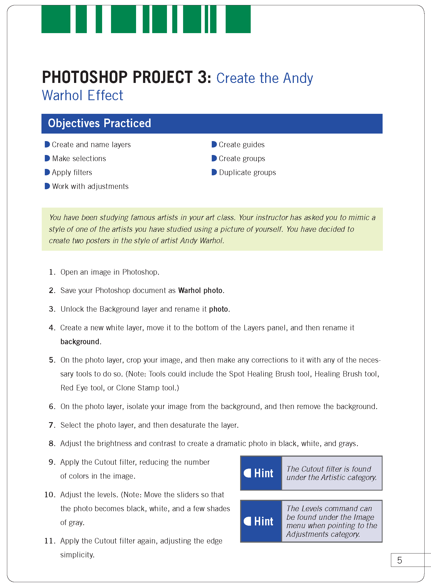

Buzz Aldrin Andy Warhol Effect
Created: March 25, 2015
Following the guide pictured on the right, this image of Buzz Aldrin was created in the course Web Design 2. This was made applying the technique and style of artist Andy Warhol. Buzz Aldrin is the second man to step foot on the moon and continues to be one of the faces of space exploration. The original image used can be found here.
